Mine projekter
Tema 2 - Grundlæggende web
Resultat
I tema 2 er jeg blevet introduceret til grundlæggende HTML og struktur. Vi startede med at skulle lave en mobilsite, og senere har vi skulle lave en website med en given wireframe som vi skulle style ved brug af CSS og aflevere som vores semesterstartsprøve. Jeg har undervejs i forløbet arbejdet med grundlæggende html og css.
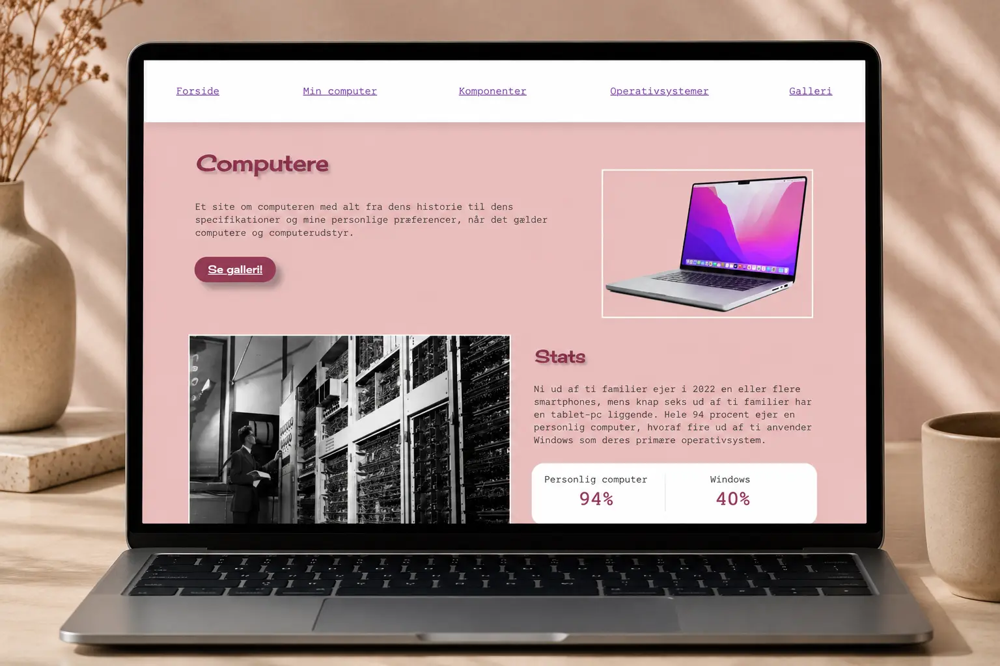
Proces
Jeg har i dette tema skulle lave en mobilsite og semesterstartsprøve som skulle vise min studieaktivitet i starten af semestret. Jeg blev i dette tema introduceret til HTML og CSS, så jeg fik en grundlæggende forståelse for struktur, og css, så jeg øvede mig i blandt andet at sætte farver, typografier, img, og margin i css. Til studiestartsprøven skulle vi også bruge grid, for at kunne lave opgaven, så dette var første gang jeg prøvede kræfter med grid.
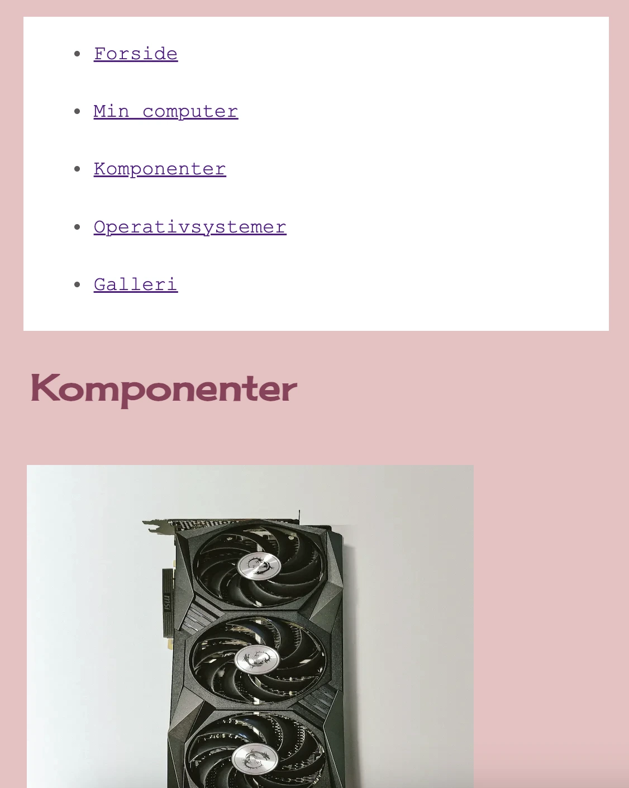
Refleksion
I dette forløb har jeg lært grundlæggende HTML og CSS, derudover struktur, som fx. semantik. Til at starte med blev vi introduceret for HTML, herunder mappestruktur. Senere blev CSS bygget på, hvor vi lærte at style vores site, samt at lave et grid, som vi senere skulle vise at vi kunne lave i studiestartsprøven. Vi blev her introduceret for github, så vi kunne aflevere vores færdige site. Jeg lærte at lave et responsivt design, så man kan se mit site i alle formater, også kaldet media queries. I dette forløb havde vi også undervisning i stilarter, designprincipper og gestaltlove, hvilket er noget jeg vil bruge i fremtidige projekter. Jeg synes det var fedt at skulle lave en side selv for første gang, og jeg husker tilbage på dette forløb som meget lærerigt, og en god måde at starte kodning på.
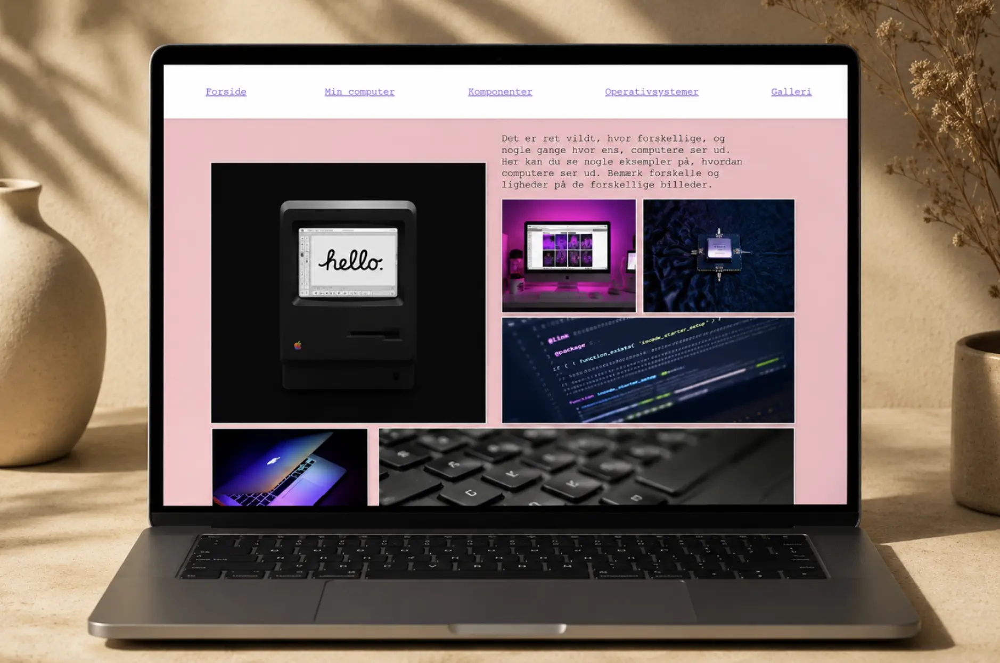
Tema 3 - Grundlæggende UX/UI
Resultat
I tema 3 har jeg lavet en emnesite som var et site om genbrug i København. Det er et site der har til formål at informere om genbrug, inspirerer og give tips og guides til andre. I denne opgave havde jeg meget fokus på research og ideudvikling, og lærte gennem hele forløbet mange metoder man kan bruge til at udvikle et site.
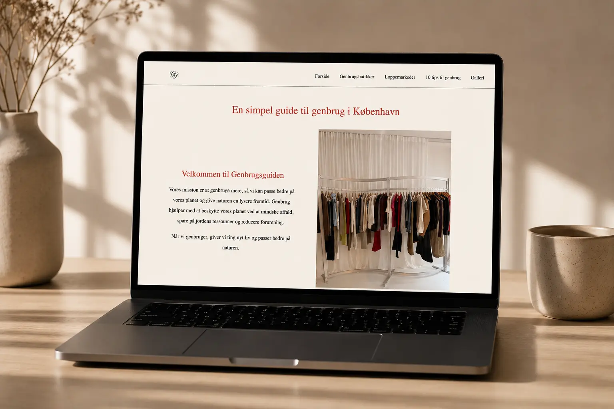
Proces
I processen til denne opgave blev jeg introduceret til en masse redskaber som man kan bruge, når man skal igang med at lave et site. Jeg startede med at lave en designbrief som gjorde mig klogere på mit emnevalg, målgruppe og formål. Da jeg skulle have mere viden om min målgruppe og brugertype, lavede jeg user stories der kunne gøre mig klogere på hvad der er vigtigt at have på mit site. I figma lavede jeg moodboards og styletiles for at finde den visuelle identitet på sitet, og derefter lavede jeg Crazy 8, Solution sketch og til sidst Sketch museum med de andre i klassen. Dette var en god metode til at tænke ud af boksen, og komme på nogle nye ideer.
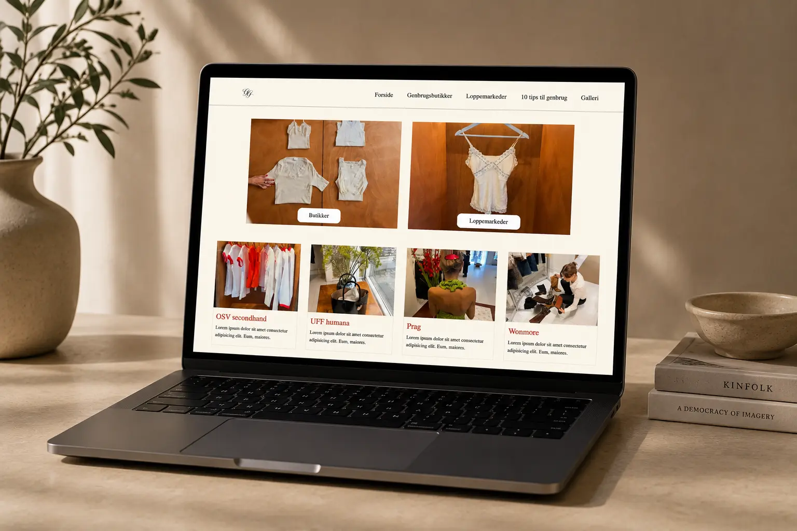
Refleksion
Jeg stiftede i denne opgave bekendtskab med mange forskellige metoder, og redskaber til når man skal igang med at lave et site. Jeg lærte mange nye fagbegreber at kende som hjælper mig i fremtidige opgaver. Efter denne opgave har jeg fået godt styr på de forskellige tests, som Likert, Tænkehøjttest, 5-sekunders test og Lighthouse. Derudover blev vi introduceret til Lofi og Hifi wireframes, og jeg lærte at lave prototyper i figma, som er en god metode, jeg fremover vil bruge når jeg ske se om mit kommende site fungerer optimalt, før jeg begynder på kodningen.
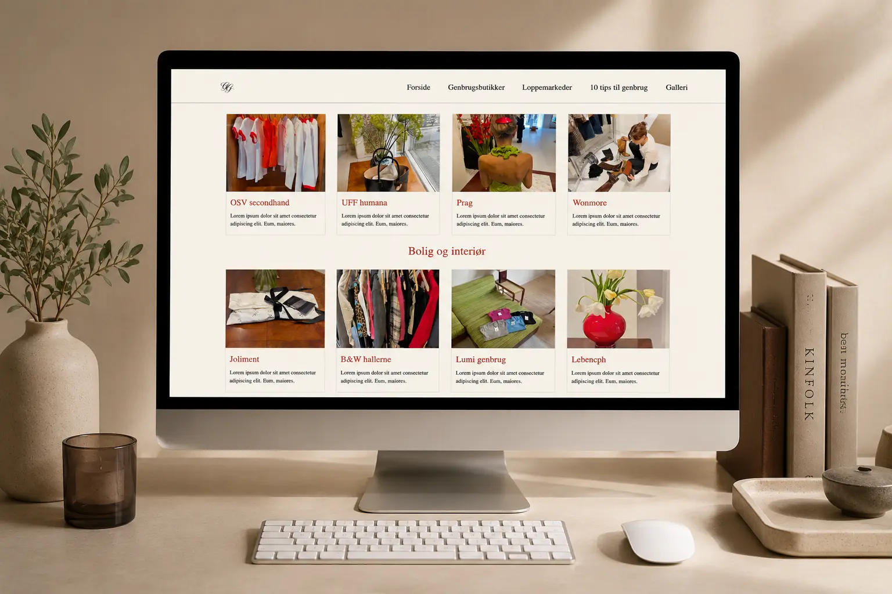
Tema 4 - Grundlæggende brugergrænsefladeudvikling
Resultat
I tema 4 har jeg lavet en emergency site der hedder “Hjælp jeg har fødselsdag”, som er tiltænkt at skulle være en site man kan gå ind og få hjælp med at planlægge en fødselsdag. Jeg har lavet illustrationer i Illustrator og lavet dem til SVG’er så man kan interagere med dem.
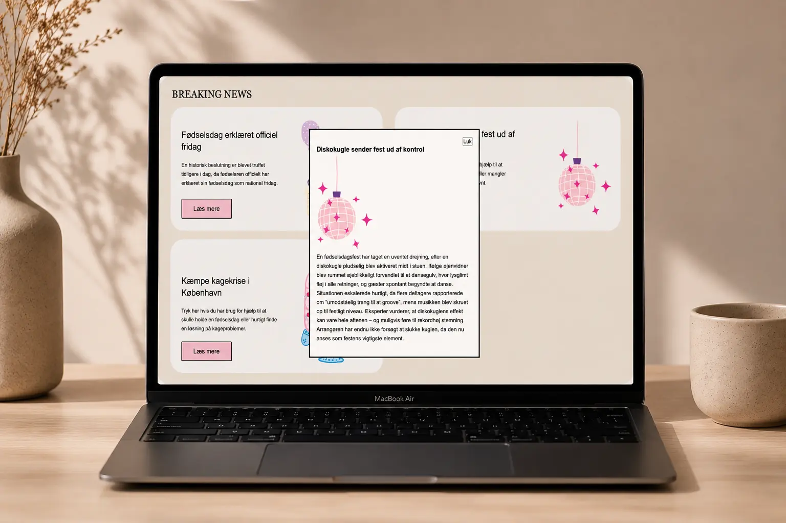
Proces
Undervejs i processen har jeg brugt illustrator til at lave illustrationer til min emergency site, jeg valgte at køre temaet fødselsdag, og derfor afspejler mine illustrationer dette, med blandt andet pastelfarver og lidt børnefødselsdag-tema. Vi blev introduceret til javascript undervejs, og derfor lavede jeg også nogle popovers på mit site, som jeg stylede i javascript.
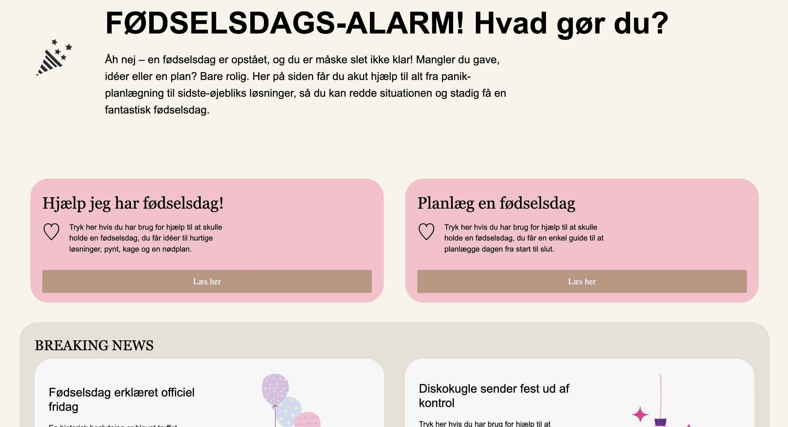
Refleksion
I denne opgave blev jeg bedre til at bruge vektorgrafik i illustrator, samt at lave SVG’er som man kan interagere med i VS code. Jeg var allerede øvet i illustrator, da jeg har brugt det meget på min højskole, men altid godt at få det genopfrisket. I denne opgave lærte jeg at lave popovers, samt style dem i javascript. Vi blev introduceret til at lave accordion og darkmode, men da jeg desværre blev syg i dette forløb og ikke nåede at lave det færdigt, har jeg valgt at lave accordion og dark mode i min portfolio opgave på tema 6, for at vise at jeg har lært at lave dette.
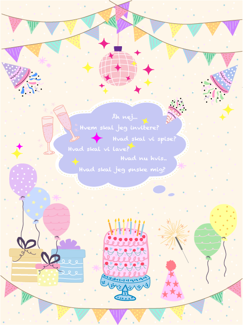
Tema 5 - Grundlæggende indhold
Resultat
I tema 5 har vi skulle lave en virksomhedssite. Vi har skulle vælge en virksomhed som vi ville hjælpe med at optimere deres eksisterende hjemmeside. Det var første gang vi skulle arbejde som en gruppe på 1. Semester. Min gruppe og jeg valgte virksomheden Ølbaren på Elmegade på Nørrebro, som er en ølbar der primært specialiserer sig i at sælge specialøl.
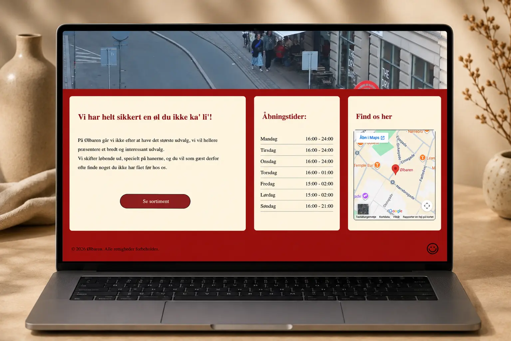
Proces
Undervejs i processen har vi skulle øve at arbejde sammen som en gruppe, og her gjorde vi brug af daily scrum, og udpegede en scrum master. Udover dette havde vi taget en basadur test, så vi vidste fra start hvad hinandens styrker var. Vi lavede en samarbejdskontrakt, som skulle hjælpe os til at forventningsafstemme samarbejdesprocessen med opgaven fra start. Undervejs i opgaven gjorde vi os mange overvejelser over hvordan vi ville gribe opgaven an. Vi besluttede os for hurtigt at besøge stedet, for at fornemme hvilen identitet stedet havde. Herefter lavede vi forskellige tests på det nuværende site, herunder Likert, 5-sekunderstest og tænkehøjt test. Vi vidste efter at have besøgt stedet, at det er det yngre klientel der ikke er så repræsenteret på stedet, og derfor blev vores primære målgruppe hurtigt at fange de unge.
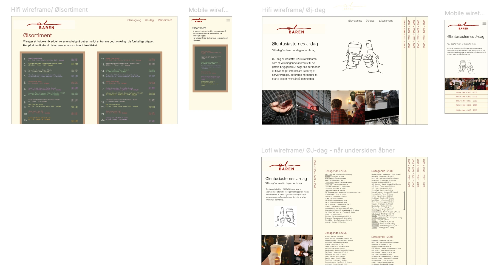
Refleksion
Undervejs i processen lærte jeg at samarbejde i github, da vi i opgaven skulle kode i det samme repository. Herudover stiftede jeg kendskab til en ny præsentationsteknik, Pecha Kucha, som viste sig at være en teknik som passer godt til min måde at præsentere mit arbejde på. I løbet af denne opgave, brugte jeg mange af de teknikker vi har lært hele semestret, og jeg kom derfor godt rundt om hele 1. semester, hvilket var en god afrunding inden eksamen.
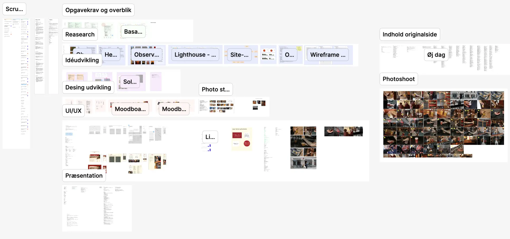
Tema 6 - Portfolioeksamen
Resultat
I tema 6 har jeg skulle lave en portfolio eksamen. Det er en hjemmeside som har til formål at vise alle de projekter som jeg har lavet i løbet af 1. Semester på Multimediedesignuddannelsen, og at fortælle om hvem jeg er. Jeg har lavet en portfolio website som afspejler en blanding af min personlighed og professionalisme.
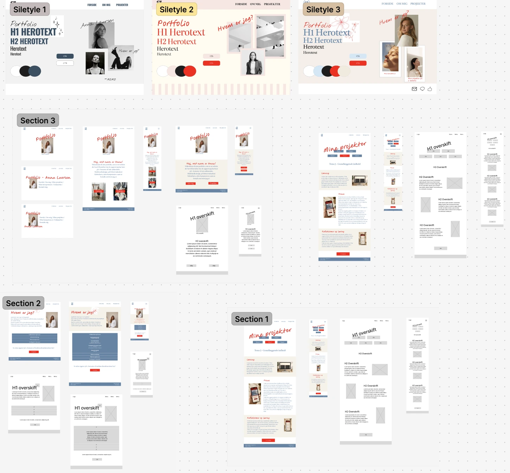
Proces
Undervejs i opgaven har jeg fået opsummeret hele 1. semester, da jeg har kigget alle temabeskrivelserne igennem og brugt alle de relevante metoder og redskaber som vi har lært hele semestret. Jeg har forsøgt at implementere alt det vi er blevet introduceret for på semestret, for netop at vise til eksamen at jeg har lært det. I processen har jeg fundet ud af at jeg arbejder godt i figma, og dette har derfor været min primære arbejdsportal. Jeg har lavet et srumboard som hjælper mig med at holde overblik over hvad jeg skal lave, hvad jeg er igang med, og hvad jeg har lavet.
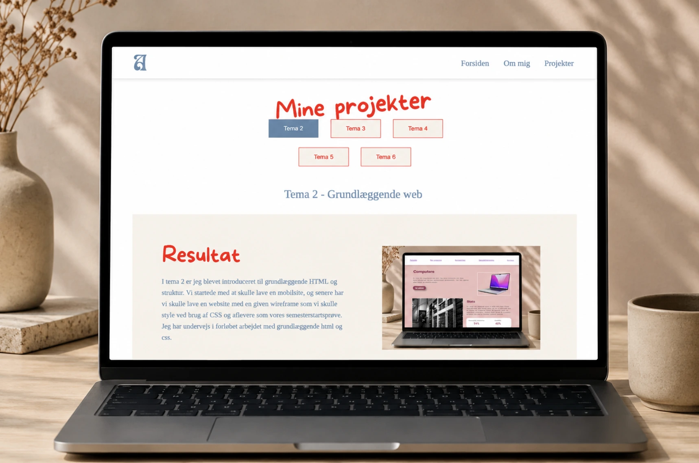
Refleksion
Jeg har kigget hele semestrets temaer grundigt igennem, for at være sikker på at jeg har alt den læring med i min opgave, som jeg mener er relevant at bruge til netop denne opgave. Undervejs har jeg gjort mig den erfaring at jeg er meget perfektionistisk, og at jeg har svært ved at blive tilfreds med de ting jeg laver, så dette er noget jeg øver mig på. På 1. semester er der nogle ting, som jeg aldrig nåede at lave, og derfor har jeg valgt bla. at tilføje accordion, og burgermenu til mit site, for at vise at dette er noget jeg har lært.
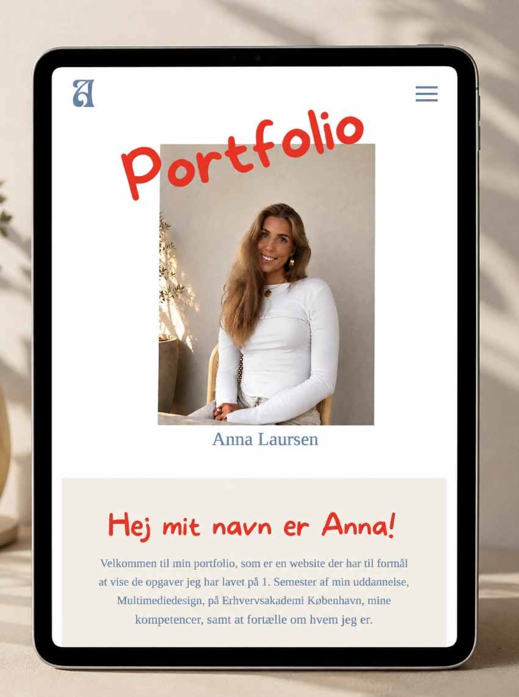